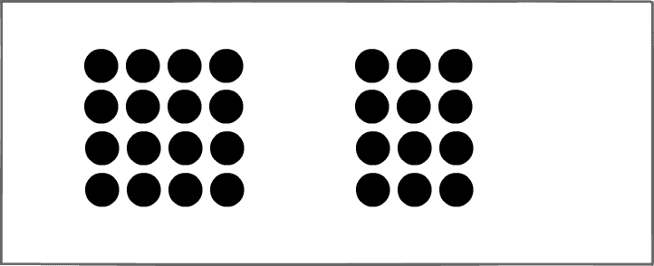
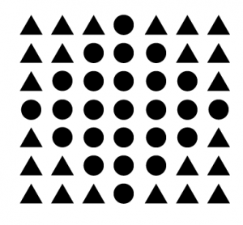
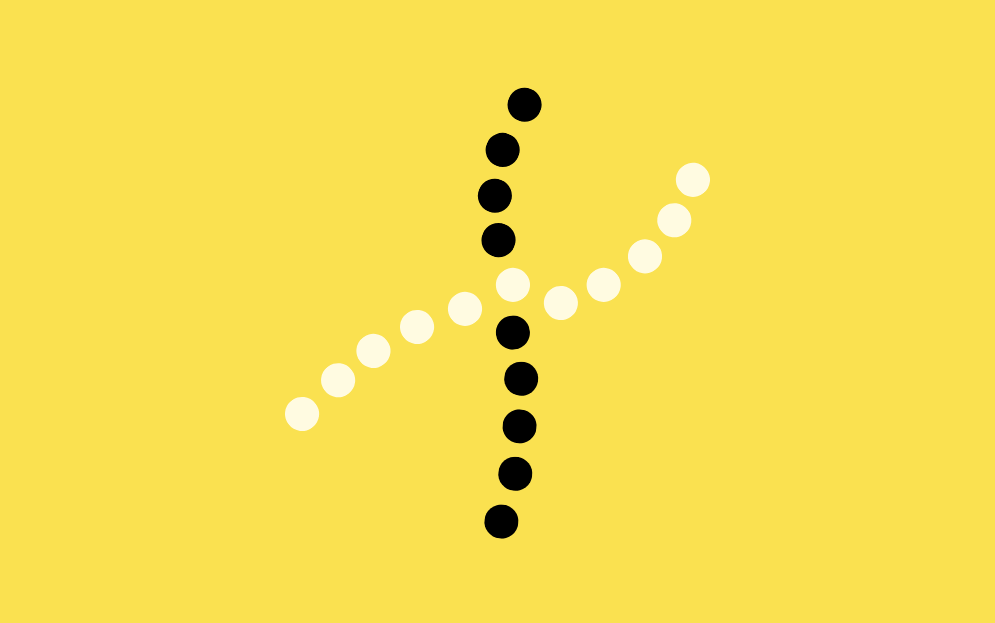
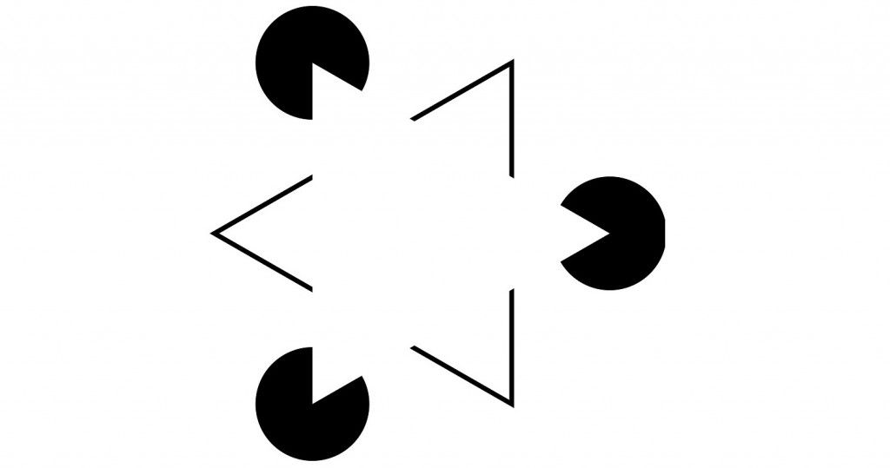
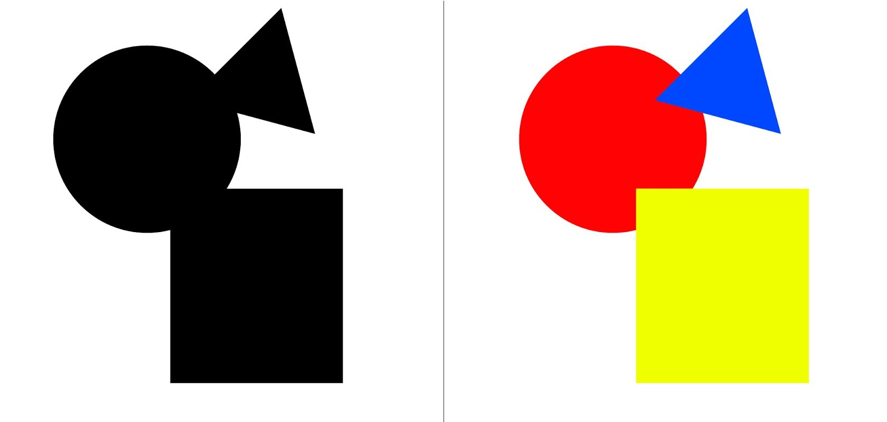
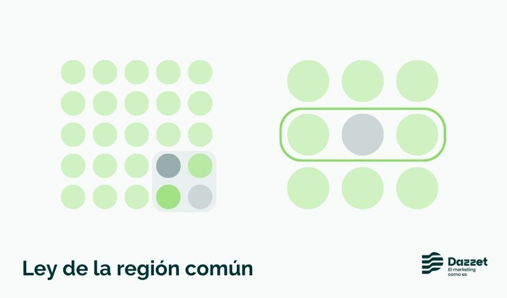

Ley de Destino Común
Los elementos que se mueven en la misma dirección se interpretan como relacionados. En animaciones o interfaces dinámicas, refuerza la coherencia del mensaje. Guía la atención del usuario hacia zonas interactivas. Transmite una sensación de unidad y propósito.
Ley de Proximidad
Los elementos que están cerca entre sí tienden a percibirse como un grupo o conjunto. En diseño web, esto se traduce en agrupar botones, textos o imágenes relacionadas. Una buena distribución espacial ayuda al usuario a entender la jerarquía visual. El espacio entre elementos también comunica relación o separación.
Ley de Semejanza
Los objetos que comparten características visuales (color, forma o tamaño) se perciben como parte del mismo grupo. Esto ayuda a que el usuario reconozca patrones rápidamente. En interfaces, los botones del mismo color indican acciones similares. La coherencia visual facilita la navegación.
Ley de Continuidad
La mente tiende a seguir líneas, curvas o direcciones de forma continua. Esto genera una sensación de movimiento o flujo visual natural. En diseño, se usa para guiar la mirada hacia un objetivo, como un botón o enlace. Una estructura alineada mejora la experiencia de lectura.
Ley de Cierre
El cerebro tiende a completar figuras incompletas para percibir un todo. Esta ley se aprovecha para crear logotipos o iconos minimalistas. Aunque falten partes, el ojo humano “rellena” la información. En la web, ayuda a simplificar sin perder comprensión..
Ley de Figura–Fondo
Nuestra percepción separa los elementos principales (figura) del fondo sobre el que se encuentran. Un buen contraste entre ambos mejora la legibilidad y el enfoque visual. En diseño web, esto significa usar colores y sombras adecuadas. Permite destacar lo esencial sin saturar la vista.
Ley de Simetría y Orden
El ser humano prefiere las formas simples, equilibradas y estables. Los diseños simétricos transmiten armonía y confianza. Un layout ordenado reduce el esfuerzo cognitivo al navegar. En interfaces, la claridad visual genera comodidad.
Ley de Región Común
Los elementos dentro de una misma área delimitada se perciben como parte de un grupo. Por ejemplo, un recuadro o fondo común une conceptos relacionados. Esto se usa mucho en tarjetas o secciones agrupadas. Ayuda a organizar visualmente el contenido en bloques.
